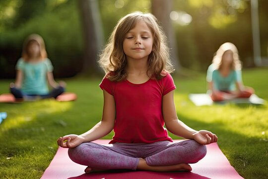
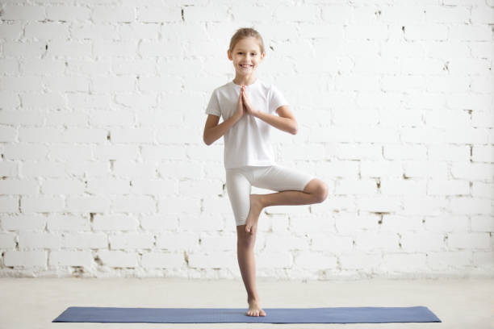
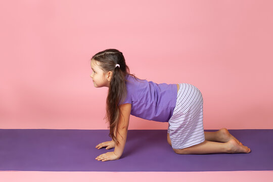
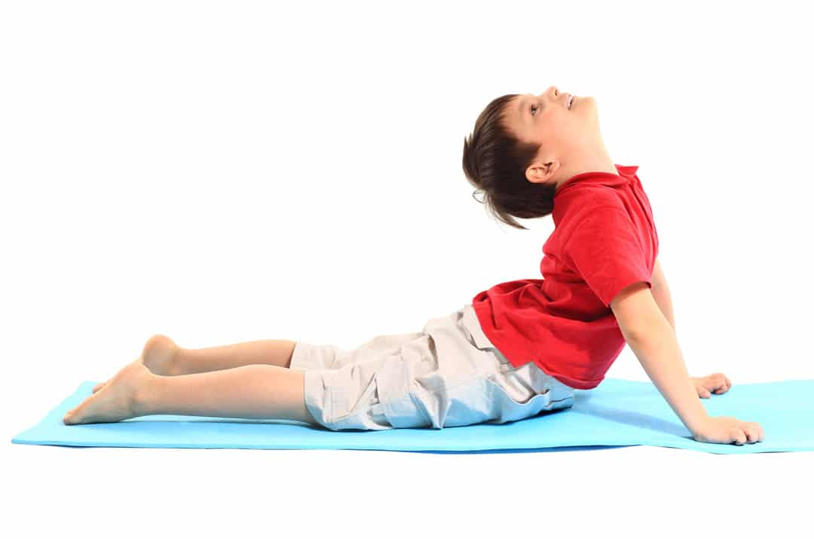
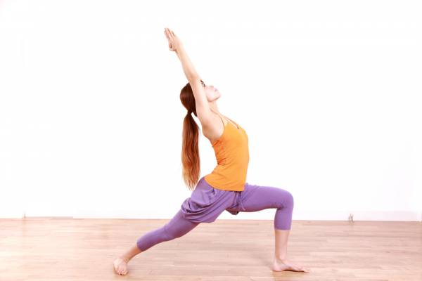
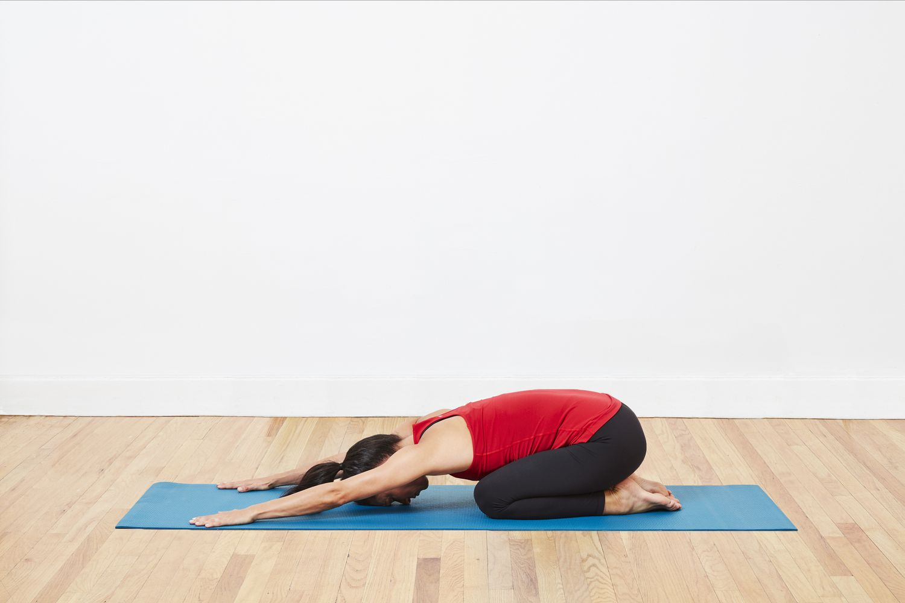

योग बच्चों के लिए
बच्चों को किस उम्र में योग सीखना चाहिए और किस प्रकार के योग का अभ्यास करना चाहिए? इस लेख में, सद्गुरु इन अक्सर पूछे जाने वाले प्रश्नों के उत्तर देते हैं और बच्चों के लिए योग के लाभों पर चर्चा करते हैं। उन्होंने आज की दुनिया में बच्चों के लिए योग के महत्व और उन्हें भीतर से काम करने वाली सही चीजों से परिचित कराने की तत्काल आवश्यकता पर भी जोर दिया।
1. शवासन

आसन करने का तरीका
- सबसे पहले अपनी पीठ के बल योगा मैट पर लेट जाएं और आंखें बंद कर लें.
- ध्यान रहे कि आपके पैर पूरी तरह से फैले हों और घुटने, पंजे, टखने, हथेली आदि विश्राम की स्थिति में हों.
- हाथों को शरीर के पास रखें, लेकिन शरीर से छूने न दें और हथेलियां आसमान की तरफ रखें.
- अब 4-5 बार गहरी और लंबी सांस लें.
- इसके बाद अपना ध्यान सांस पर केंद्रित करने की कोशिश करें और सांस को जितना हो सके धीमा कर लें.
- इस स्थिति में 5 से 10 मिनट तक रहें. जब आपको आराम महसूस होने लगे, तो वापिस सांस को सामान्य कर लें और सीधी करवट लेते हुए बैठ जाएं.
- आंखों को एकदम न खोलें. बल्कि धीरे-धीरे खोलें.
आसन के फ़ायदे
शवासन करने से अस्थाई चिंता व तनाव से राहत पाई जा सकती है. यह योगासन किसी भी अन्य अधिक परिश्रम वाले योगासन के बाद शरीर को आराम पहुंचाने के लिए किया जा सकता है. अगर आप ऑफिस या बाहर की थकान मिटाना चाहते हैं, तो भी शवासन काफी फायदेमंद है. फोकस और याद्दाश्त बढ़ाने में मदद करता है.2. सुखासन
आसन करने का तरीका
- यह आसान योगासन बच्चे भी कुछ ही मिनटों में सिख कर, कर सकते हैं।
- सबसे पहले फर्श पर एक दरी बिछाएं और दोनों पैरों को मोड़ कर बैठ जाएँ।
- पैर कुछ इस तरीके से मोड़ कर बैठे कि एक पैर का नीचला हिस्सा बाहर की और दिखे और दूसरा अगले पैर के जांघों के नीचे।
- उसके बाद सीधे बैठें और अपने रीड की हड्डी को सीधा रखें।
- अपने दोनों हांथों के हथेलियों को ऊपर करके अपने घुटनों पर रखें और ज्ञान मुद्रा धारण करें।
- धीरे-धीरे लम्बी साँस लें और धीरे-धीरे फिर साँस छोड़ें।
आसन के फ़ायदे
यह आपकी रीढ़ को फैलाने के साथ इससे संबंधित समस्याओं को दूर करता है। कॉलरबोन और छाती को चौड़ा करता है। दिमाग को शांत करके कई तरह की समस्याओं से राहत दिलाता है। चिंता, तनाव और मानसिक थकान से बचाव करता है। यह शरीर की मुद्रा में सुधार करने में मदद करता है।3. वृक्षासन
आसन करने का तरीका
- हाथों को बगल में रखते हुए सीधे खड़े हो जाएँ।
- दाहिने घुटनें को मोड़ते हुए अपने दाहिने पंजे को बाएँ जंघा पर रखेंI आपके पैर का तलवा जंघा के ऊपर सीधा एवं ऊपरी हिस्से से सटा हुआ हो।
- बाएँ पैर को सीधा रखते हुए संतुलन बनाये रखें।
- अच्छा संतुलन बनाने के बाद गहरी साँस अंदर लें, कृतज्ञता पूर्वक हाथों को सर के ऊपर ले जाएँ और नमस्कार की मुद्रा बनाएं
- बिल्कुल सामने की तरफ देखें, सीधी नज़र सही संतुलन बनाने में अत्यंत सहायक है
- रीढ की हड्डी सीधी रहे आपका पूरा शरीर रबर बैंड की तरह तना हुआ होI हर बार साँस छोड़ते हुए
- शरीर को ढीला छोडते जाएँ और विश्राम करें, मुस्कुराते हुए शरीर और साँस के साथ रहें
- धीरे-धीरे साँस छोड़ते हुए हाथों को नीचे ले आयेंI धीरे से दाहिने पैर को सीधा करें
- सीधे लम्बे खड़े हो जाए बिल्कुल पहले की तरहI अब बाएँ तलवे को दाहिने जांघ पर रख कर आसन को दोहराएं
आसन के फ़ायदे
इस आसन को करने के पश्चात आप ऊर्जा से परिपूर्ण महसूस करते हैं। यह आसन पैर, हाथों और बाजुयों की मांस-पेशियों में खिंचाव पैदा करता है और आपको पुनः तरो-ताज़ा कर देता है। यह मस्तिष्क में स्थिरता और संतुलन लाता हैI एकाग्रता बढ़ाने में सहायक हैI4. वितिलासन
आसन करने का तरीका
- सबसे पहले आप जमीन पर योगा मैट विछाएं
- अब मैट पर दोनों घुटनों को टेकें और बैठ जाएं.
- दोनों हाथों को जमीन पर रखें और अपने कूल्हों को उठाएं.
- आपके हाथ और जांघ दोनों एक ऊंचाई पर होने चाहिए.
- अब गाय की तरह अपनी स्थिति को लेकर आएं.
- इस दौरान आपको लंबी और गहरी सांस लेना है
- इसके बाद सर को ऊपर की तरफ उठाएं.
- जितना हो सके उतना नाभि को नीचे की तरफ धकेलें.
- आपकी रीढ़ की हड्डी के निचला हिस्सा ऊपर की तरफ होना चाहिए.
- ध्यान रहे कि आपके घुटनों के बीच में कुछ दूरी होनी चाहिए.
- इस दैरान आपके हाथ भी मुडे नहीं होने चाहिए.
- अब अपने सिर को फिर ऊपर की तरफ उठाएं और अपनी कमर को सीधा करें.
- इस पर क्या को तकरीबन 10 से 15 बार दोहराएं.
आसन के फ़ायदे
तनाव और इनसोम्निया की समस्या दूर हो सकती है. घुटनों के, कंधों के और कूल्हों के जोड़ों को मजबूती मिलती है कलाई मजबूत होने के साथ हाथ और कंधे भी मजबूत बनते हैं. गर्दन, कंधे के तनाव को दूर करने में उपयोगी है.5. अधोमुख श्वान आसन
आसन करने का तरीका
- अपने हाथों और पैरों के बल आ जाएँ। शरीर को एक मेज़ की स्थिति में ले आयें। आपकी पीठ मेज़ की ऊपरी हिस्से की तरह हो और दोनों हाथ और पैर मेज़ के पैर की तरह।
- साँस छोड़ते हुए कमर को ऊपर उठाएं। अपने घुटने और कोहनी को मजबूती देते हुए सीधे करते हुए अपने शरीर से उल्टा v-आकार बनाएं।
- हाथ कंधो के जितने दूरी पर हों। पैर कमर के दूरी के बराबर और एक दुसरे के समानांतर हों। पैर की उंगलिया बिल्कुल सामने की तरफ हों।
- अपनी हथेलियों को जमीन पर दबाएँ, कंधो के सहारे इसे मजबूती प्रदान करें। गले को तना हुआ रखते हुए कानों को बाहों से स्पर्श कराएं।
- लम्बी गहरी श्वास लें,अधोमुख स्वान की अवस्था में बने रहें। अपनी नज़रें नाभि पर बनाये रखें।
- श्वास छोड़ते हुए घुटने को मोड़े और वापस मेज़ वालीस्थिति में आ जाएँ। विश्राम करें।
आसन के फ़ायदे
इस आसन को करने से रीढ़ की हड्डी में मजबूती आती है और वह लचीली हो जाती है। इस आसन से ना केवल पेट की मांसपेशियां बल्कि पैरों की मांसपेशियों में भी मजबूती आती है। इससे पाचन क्रिया तंदुरुस्त होती है। अगर आपको हर वक्त आलस और थकान महसूस होती है तो इस आसन को करने से समस्या भी दूर हो जाती है। कोरोना के कारण जो लोग घर से काम कर रहे हैं अक्सर उन लोगों की कमर अकड़ जाती है। ऐसे में इस समस्या को दूर करने के लिए आप इस आसन का प्रयोग कर सकते हैं।6. तितली आसन

आसन करने का तरीका
- पैरों को सामने की ओर फैलाते हुए बैठ जाएँ,रीढ़ की हड्डी सीधी रहे।
- घुटनो को मोड़ें और दोनों पैरों को श्रोणि की ओर लाएँ,पाँव के तलवे एक दुसरे को छूते हुए।
- दोनों हाथों से अपने दोनों पाँव को कस कर पकड़ लें। सहारे के लिए अपने हाथों को पाँव के नीचे रख सकते हैं।
- एड़ी को जननांगों के जितना करीब हो सके लाने का प्रयास करें।
- लंबी,गहरी साँस ले, साँस छोड़ते हुए घुटनो एवं जांघो को फर्श की ओर दबाएँ।
- तितली के पंखों की तरह दोनों पैरों को ऊपर नीचे हिलाना शुरू करें। धीरे धीरे गति बढ़ाएँ। साँस लेते रहें।
- जितना संभव हो उतनी तेज़ी से प्रक्रिया को करें| धीमा करते हुए रुकें,गहरी साँस ले,साँस छोड़ते हए आगे की ओर झुकें,ठुड्डी उठी हुई,रीढ़ की हड्डी सीधी रहे।
- कोहनी से जांघों या घुटनो पर दबाव डाले जिससे घुटने एवंजांघ जमीन को छुए।
- जाँघो के अंदरुनी हिस्से में खिंचाव महसूस करें और लंबी गहरीसाँस लेते रहें।मांसपेशियों को अधिक विश्राम दें।
- एक लंबी गहरी साँस ले और धड़ को ऊपर लाएँ।
- साँस छोड़ते हुए धीरे से मुद्रा से बाहर आएँ,पैरों को सामने की ओर फैलाएं,विश्राम करें।
आसन के फ़ायदे
जाँघो, कटि प्रदेश एवं घुटनो का अच्छा खिंचाव होने से श्रोणि एवं कूल्हों में लचीलापन बढ़ता है। लम्बे समय तक खड़े रहने एवं चलने की वजह से होने वाले थकान को मिटाता है। मासिक धर्म के दौरान होने वाली असुविधा एवं रजोनिवृति के लक्षणों से आराम। गर्भावस्था के दौरान लगातार करने से प्रसव में आसानी।7. तितली आसन
आसन करने का तरीका
- सबसे पहले फर्श पर मैट बिछा लें और उस पर सीधे खड़े हो जाएं
- बाएं पैर को आगे व दाएं पैर को पीछे रखें और कमर व गर्दन सीधी रखें
- अब बाएं घुटनों के मोड़ते हुए आगे ले जाएं और दाएं पैर के घुटने को मोड़ते हुए मैट पर रख लें
- ऐसा करते हुए दाएं पैर के ऊपरी हिस्से को मैट पर रख लें और तलवे को ऊपर की तरफ कर लें
- दोनों हाथों को उठाएं और उन्हें कूल्हों या जांघों के आगे रख लें
- अब गहरी सांस लेते हुए बाएं पैर के पंजे पर हल्का जोर देना शुरू करें और दोनों हाथों को ऊपर ले जाएं
- दोनों बाहों को सीधा ऊपर रखें व हाथों को जोड़ लें और इस दौरान आपकी बाइसेप्स आपके कानों को स्पर्श कर रही होनी चाहिए
- अब गहरी सांस लेकर धीरे-धीरे छोड़ें और साथ ही रीढ़ की हड्डी को सीधा करें
आसन के फ़ायदे
मसल्स और पीठ को स्ट्रॉन्ग बनाने के अलावा ये आसन पाचन तंत्र और मेटाबॉलिज्म के लिए भी फायदेमंद है। इसके अलावा इसे नियमित करने वालों की स्किन फ्रेश और यंग दिखती है क्योंकि इससे शरीर का ब्लड सर्कुलेशन भी सही होता है।8. बालासन
आसन करने का तरीका
- अपनी एड़ियों पर बैठ जाएँ,कूल्हों पर एड़ी को रखें,आगे की ओर झुके और माथे को जमीन पर लगाये।
- हाथों को शरीर के दोनों ओर से आगे की ओर बढ़ाते हुए जमीन पर रखें, हथेली आकाश की ओर (अगर ये आरामदायक ना हो तो आप एक हथेली के ऊपर दूसरी हथेली को रखकर माथे को आराम से रखें।) धीरे से छाती से जाँघो पर दबाव दें।
- स्थिति को बनाये रखें।
- धीरे से उठकर एड़ी पर बैठ जाएं और रीढ़ की हड्डी को धीरे धीरे सीधा करें। विश्राम करें।